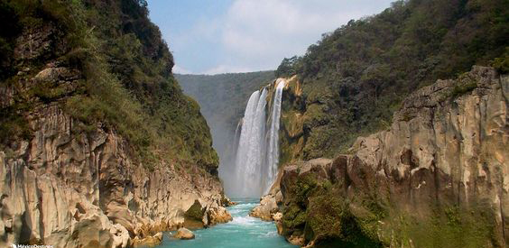
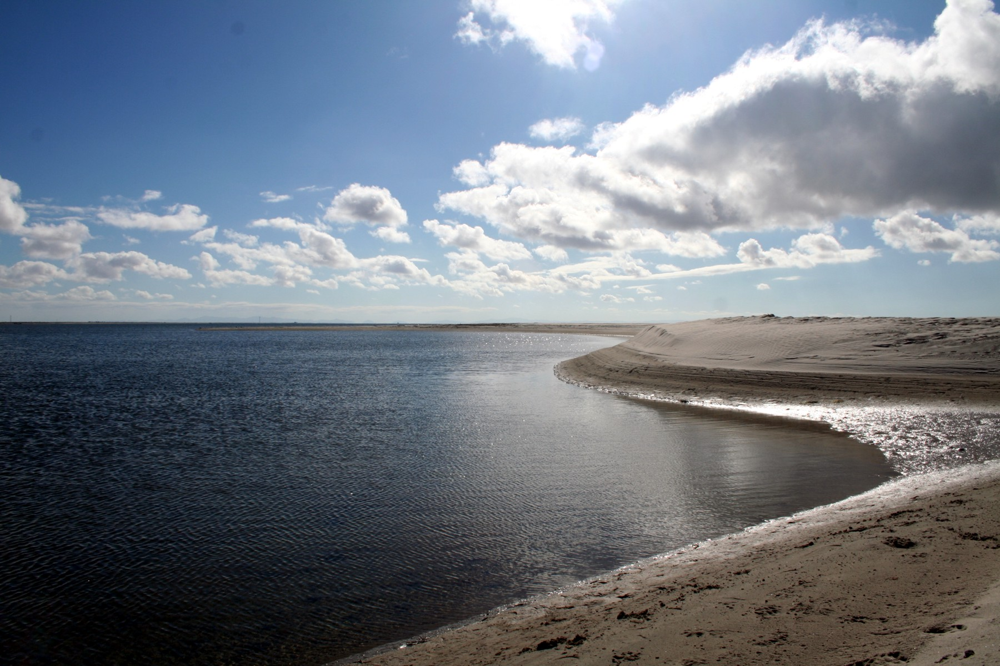
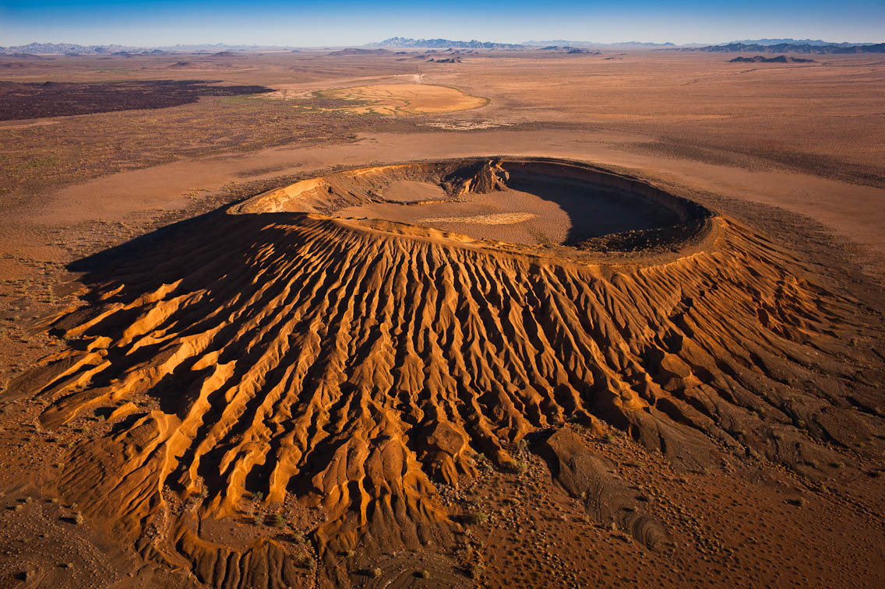
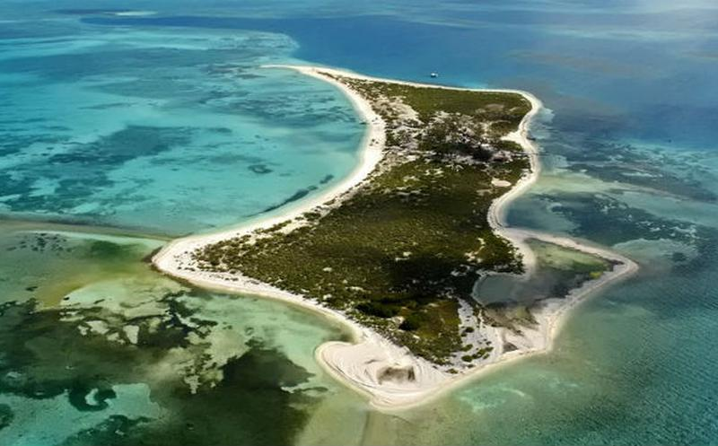
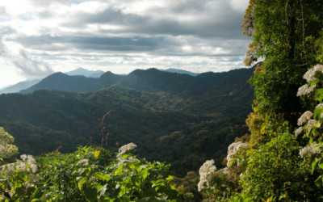
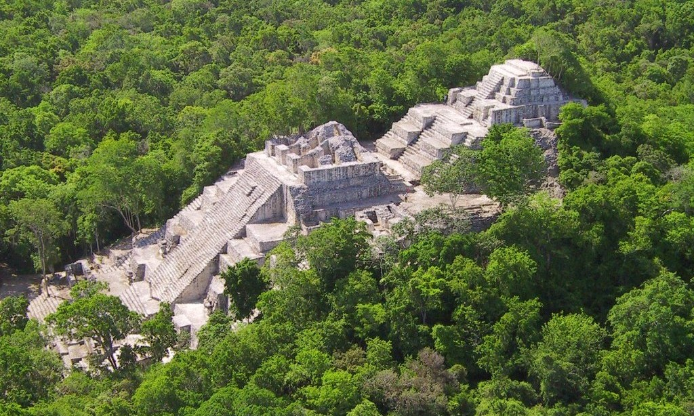

¿Qué es un área protegida?
Las áreas protegidas son esenciales para conservar la biodiversidad natural y cultural y los bienes y servicios ambientales que brindan son esenciales para la sociedad. A través de actividades económicas, como el turismo entre otras, muchas áreas protegidas son importantes para el desarrollo sostenible de comunidades locales, especialmente pueblos indígenas que dependen de ellos para su supervivencia. Los paisajes protegidos personifican valores culturales importantes; algunos de ellos reflejan las prácticas sostenibles de la utilización de la Tierra. También, son espacios en donde el hombre puede experimentar paz, revigorizar su espíritu y desafiar sus sentidos. Son importantes para investigación y educación, y contribuyen a las economías locales y regionales. La importancia de las áreas protegidas es reconocida en la Convenio sobre la Diversidad Biológica (CBD). Pueden ser creadas para proteger bellezas escénicas, diversidad biológica y cultural, para investigación científica y para educación ambiental.
En su nuevo documento Directrices para la aplicación de las categorías de gestión de áreas protegidas (Dudley, 2008), la UICN define a las áreas protegidas como: "Un espacio geográfico claramente definido, reconocido, dedicado y gestionado, mediante medios legales u otros tipos de medios eficaces para conseguir la conservación a largo plazo de la naturaleza y de sus servicios ecosistémicos y sus valores culturales asociados.” [2]
El Convenio sobre la Diversidad Biológica (CBD) define un área protegida como: “un área geográficamente definida que esta designada o regulada y gestionada para lograr específicos objetivos de conservación”. [3]
Según las funciones y objetivos de manejo que tiene un área protegida puede ser designada como parque nacional o reserva natural, entre otras clasificaciones. La UICN ha desarrollado un sistema de estándares para clasificar las áreas protegidas según su categoría de manejo.
[2] Dudley, N. (Editor) (2008). Directrices para la aplicación de las categorías de gestión de áreas protegidas.
[3] www.cbd.int
La importancia de las áreas protegidas
La importancia de los espacios naturales protegidos se reconoce en el Convenio sobre la Diversidad Biológica (CBD) y reside en el objetivo principal que persiguen todos ellos: el cuidado y la protección de la biodiversidad natural ante el deterioro de estos espacios o monumentos naturales, así como evitar que los recursos sean explotados de manera excesiva.
Existe además otra razón de suma importancia que se añade al valor de estas zonas, y es que también se relaciona con el cambio climático. Se estima que la red mundial de estos espacios o áreas protegidas captura al menos el 15% del carbono del planeta.
Estas áreas además tienen funciones fundamentales que se reportan en beneficios para el planeta (funciones ambientales), puesto que albergan una gran riqueza biológica, pero también en beneficios económicos para el ser humano, entre los que destacan el suministro de alimentos, materias primas y otros recursos naturales.
En resumen, las áreas protegidas son espacios de gran importancia para el medio natural, realizando además importantes funciones tales como:
-
Cuidado y protección de la biodiversidad.
-
Regular la actividad y el impacto del ser humano en espacios naturales para su preservación o restauración.
-
Captar el exceso del CO2 atmosférico.
-
Regulación del clima.
-
Conservación de reservas de agua.
-
Mantenimiento de la fertilidad de los suelos.
-
Fuente de alimento y de materias primas.
Actualmente se busca incrementar el espacio protegido de manera que varias áreas queden conectadas para permitir un mejor flujo de elementos naturales y seres vivos. Esto no significa que las poblaciones sean removidas, al contrario, es de mucha importancia que los habitantes de comunidades locales participen en las acciones de protección y sean “vigilantes” ante actos ilegales. Este apoyo es fundamental para poder ampliar y conservar las áreas naturales.
Para el año 2020 se pretende ascender a 17 por ciento en cobertura de protección mundial. Podría parecer que poco más de 2 por ciento es una cifra fácilmente alcanzable, pero los científicos estiman que ahora existe una pérdida del 0.7% de esta protección, lo que puede hacer más arduo el objetivo.
La organización internacional UICN desarrolló hace más de 25 años un sistema de estándares para clasificar áreas protegidas con base a su categoría de manejo, funciones y objetivos. Las categorías son las siguientes:
Categorías
I. Protección estricta.
Ia. Reserva Natural Estricta.
Ib. Área natural silvestre
II: Conservación y protección del ecosistema
Parque nacional
III: Conservación de los rasgos naturales
Monumento natural
IV: Conservación mediante manejo activo
Área de manejo de hábitats / especies
V: Conservación de paisajes terrestres y marinos y recreación
Paisaje terrestre y marino protegido
VI: Uso sostenible de los recursos naturales
Área protegida manejada.
Las tasas más elevadas de protección de territorio se sitúan en los países de América Latina y el Caribe, con un total de 5 millones de km2, de los cuales, 2.47 millones de km2 corresponden a Brasil, que posee la red de áreas protegidas más extensa del mundo. No obstante, una importante fracción de tierra sufre las consecuencias de la deforestación.
Por el contrario, las tasas más bajas forman parte del Medio Oriente con unos 119, 000 km2, lo que equivale a poco menos del 3 por ciento.
Las áreas protegidas no solo comprenden superficies terrestres sino también ambientes marinos. En 2006 la extensión de áreas marinas protegidas era de 4 millones de km2, y para el año de 2016 esto incrementó favorablemente a 15 millones de km2 o el 4 por ciento de los océanos del mundo, que en proporciones más claras equivaldría más o menos al territorio de Rusia. Esto puede parecer un gran número, pero la mayoría de las aguas no tiene algún tipo de vigilancia o regulación.
Movimiento de Parques Nacionales
El movimiento de parques nacionales estaba guiado desde sus inicios por tres condiciones básicas que motivaban su establecimiento:
-
Oponerse a la explotación humana referido a la extracción o transformación de recursos con el objetivo de conservar especies, ecosistemas o paisajes.
-
Lograr que los visitantes obtuvieran distintos beneficios recreativos, educativos, culturales de los resultados de esa conservación.
-
Aprovechar esa conservación para estudios científicos que no se pueden realizar en otro lugar. Muy pronto todos los países quisieron tener su parque nacional, para conservar sus más relevantes e interesantes zonas.
En este afán de aplicar de forma mecánica la categoría de manejo a diversas áreas, sin considerar la realidad socio-económica y ecológica de las mismas, surgieron consecuencias negativas: en ocasiones se desvirtúan los valores reales de este tipo de áreas protegidas y por otro lado, hubo una aplicación inadecuada de las normas de manejo que demandan los parques nacionales en áreas naturales valiosas, que requerían ser abordadas en el marco de otras categorías de manejo.
La Organización de las Naciones Unidas (ONU) decidió publicar una relación de parques nacionales, seleccionados, atendiendo a determinados requisitos, e incentivara a los países a correcto establecimiento de parques nacionales.
Definición de Parques Nacionales
Tras una encuesta mundial que esta organización encargó a la Comisión Internacional de Parques Nacionales creada en 1960, de la Union Internacional para la Conservación de la Naturaleza (UICN), se publica en 1967la primera lista de parques y reservas analógicas reconocidas por las Naciones Unidas. LA X Asamblea General de la UICN, aprobó en 1969, la definición de Parque Nacional, y estableció que eran: áreas relativamente extensas, donde uno o varios ecosistemas no estén sustancialmente alterados por la explotación y ocupación humana, donde las especies de plantas y animales, sitios geomorfológicos y hábitat son de especial interés científico, educativo y recreativo o contienen paisajes naturales de gran belleza.
Donde las mas altas autoridades competentes del país ha dado pasos para prevenir o eliminar, tan pronto como sea posible, la explotación u ocupación en toda el área y para reforzar de forma efectiva el respecto por las características ecológicas, geomorfológicos o estéticas que dieron lugar a su establecimiento; y donde se permite entrar visitantes, bajo condiciones especiales con propósitos de inspiración, educativos, culturales y recreativos.
Áreas Naturales Protegidas en México
1. Reserva de la Biosfera “El Vizcaíno” Guerrero Negro, Baja California Sur
Es el Área Natural Protegida más grande de México y una de las más grandes de Latinoamérica con una superficie de 2´546,790.25 hectáreas y 450 kilómetros de litorales. Esta reserva es hábitat de una gran diversidad de fauna, por ejemplo, aquí se encuentran los santuarios de ballena gris en las lagunas Ojo de Liebre, Guerrero Negro y San Ignacio. También alberga a más de 400 especies de platas, de las cuales el 83% son únicas de este lugar resultado del aislamiento geográfico. Existen 300 sitios con arte rupestre en la Sierra de San Francisco. La UNESCO, reconoce a “El Vizcaíno” por su valor natural y cultural.

2. Reserva de la Biosfera El Pinacate y Gran Desierto de Altar, Sonora
Conocida como “El Pinacate”, inmersa en el desierto sonorense, este es un lugar místico de extraña belleza, criaturas salidas de un cuento de hadas y características geológicas únicas. Aquí se encuentra el campo de dunas más grande de Norteamérica, además un espectacular escudo volcánico, con imponentes cráteres gigantes. Hábitat de una enorme biodiversidad, con más de 540 especies de plantas, 40 de mamíferos, 200 de aves, 40 de reptiles, anfibios y peces de agua dulce. Es además un vasto acervo arqueológico, que se remonta a más de 20,000 años -centro de creación del universo- según la tribu O’odham.

3. Parque Nacional Arrecife Alacranes
Es un conjunto de 5 islas de origen coralino localizadas en el Golfo de México, a 130km de Progreso, Yucatán. Lugar de gran riqueza biológica, conformada por dunas costeras y manglares, hábitat de 116 especies de aves, entre residentes y migratorias. Se han registrado 24 especies de tiburón y cuatro de tortugas marinas. Aquí se ubica la colonia de alcatraz enmascarado más grande del Atlántico. Es un sitio de gran importancia para las pesquerías comerciales de langosta y mero. Sus ecosistemas intactos y su riqueza natural hacen del Arrecife Alacranes un excelente lugar para el desarrollo sustentable, con formidable potencial económico, científico y educativo.

4. Reserva de la Biosfera El Triunfo, Chiapas
Aquí se encuentran dos de los ecosistemas más amenazados de México; “El bosque de niebla” y “La selva tropical húmeda del Soconusco”. Adentrase a la Reserva es visitar un mundo desconocido, donde los cúmulos de niebla envuelven a la vegetación, formada por enormes helechos y árboles gigantes de hasta 90 metros de altura, cuyos troncos y ramas se encuentran envueltos de musgo, líquenes y orquídeas, como si fueran jardines colgantes. Su topografía accidentada, sirve de refugio para especies en peligro de extinción como; el jaguar, mono araña, tapir, pavón, tucanes y quetzal.

5. Reserva de la Biosfera Calakmul, Campeche
Es la mayor Reserva mexicana de bosque tropical, con una extensión de 723,185-12-50 hectáreas. Incluye más de 80% de las especies vegetales de toda la Península de Yucatán, además de 350 especies de aves y casi 100 especies de mamíferos. Hábitat de muchas especies en peligro de extinción como el pecarí labios blancos, tapir centroamericano, jaguar, pavo ocelado y zopilote rey, entre otras. Era el mayor centro urbano maya en el periodo clásico, existen 525 sitios arqueológicos en excelente estado de conservación; ahora es un sitio prioritario para la protección y conservación de su diversidad biológica, cultural y étnica, heredada del pueblo maya.

Referencias
https://www.ecologiaverde.com/la-importancia-de-las-reservas-naturales-y-areas-protegidas-1105.html
http://www.geoenciclopedia.com/areas-naturales-protegidas-del-mundo/
https://www.iucn.org/es/regiones/am%C3%A9rica-del-sur/nuestro-trabajo/%C3%A1reas-protegidas/%C2%BFqu%C3%A9-es-un-%C3%A1rea-protegida
https://www.ecured.cu/%C3%81reas_Protegidas_en_el_Mundo